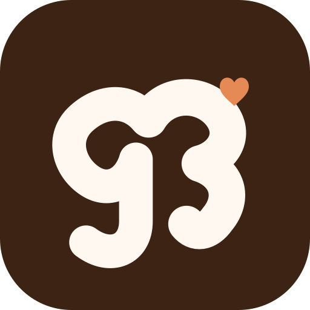

Gr3tful · refined option C
The g and 3 meet at the top.
The two upper curves touch to form one mark. The heart sits where the rays used to be.

gr3tful
On a light screen
gr3tful
Favicon-sized check
On a dark screen
gr3tful
Same icon, readable against the dark app theme
Concept artwork · the icon shape and wordmark will be polished into final vectors after your feedback.